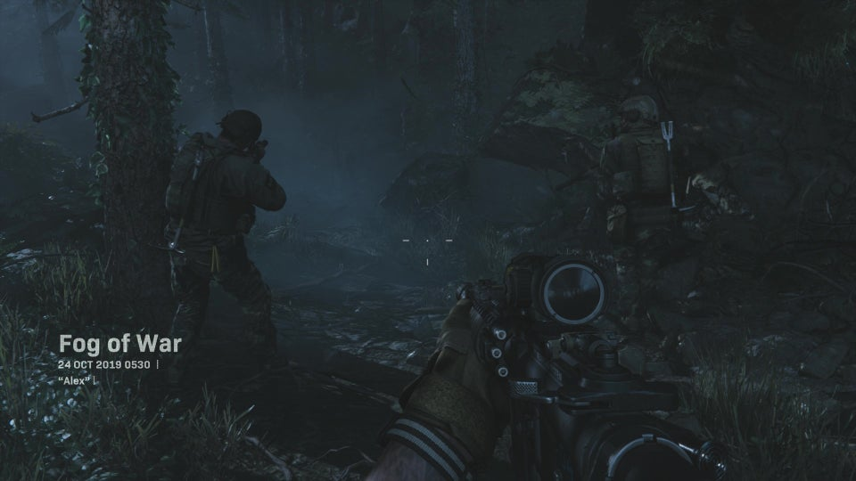
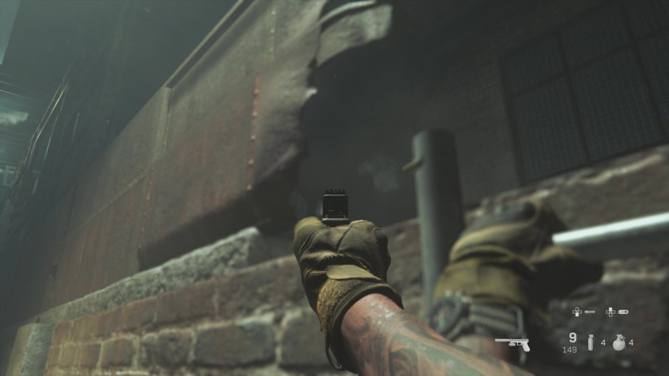
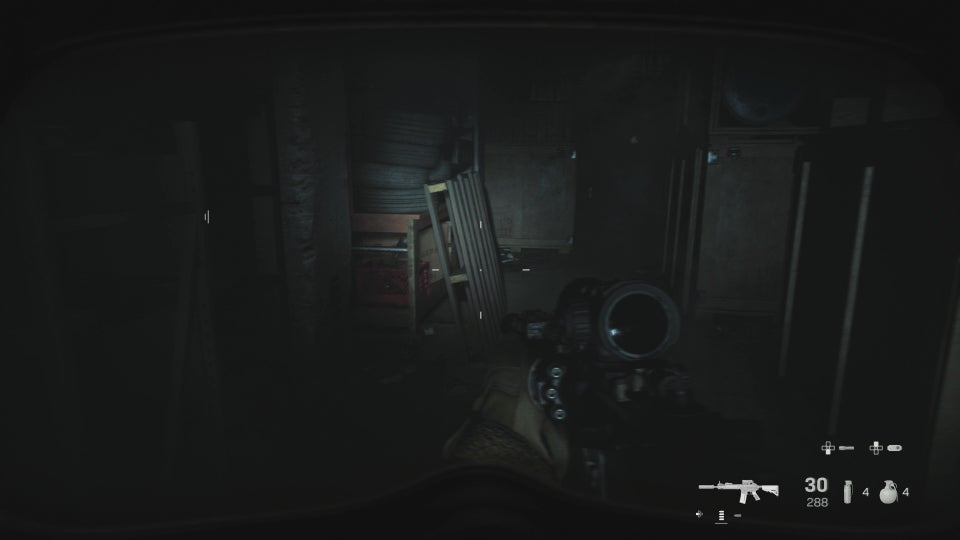

This page contains IGN's walkthrough for Fog of War in Call of Duty: Modern Warfare.
The first mission will show you the ropes and get you used to taking out enemies silently. It's a short one, but it's good for getting you used to how the game will play.
After you take out the first two mercs, you'll need to make your way along the path towards the base below and call in an airstrike.
Once you head down, you'll come across a few more enemies and several burning trees thanks to your airstrike. Head into the base and continue along the path, into the building where you'll find a couple more enemies.
Take them out and when you open the door that leads to the exit, stay back because enemies will be ready to ambush you. Here, you'll be instructed to mount your weapon on the wall, so do that and take out the nearby enemies. They will be waiting for you to the left.
From here, stick to the right side of the area and take out the enemies to the left. There should be a handful of them with flashlights, so they'll be easy to spot. Also, look out for mercs in the train cars.
Once you've cleared them out, head to the left side, cautiously, using the train cars for cover. Look for a ladder that leads up into a building ahead, but be careful of the two enemies waiting for you.
After you take them out, head down to the lower level and there will be a few more enemies waiting for you. Take them out and continue into the building with your team.
Once the door opens, you'll come to a large, dark room where the power has been cut. Use your flashlight and cautiously move around the crates to take out the nearby enemies. Throw a flash if you need to, and check your corners.
Turn on the power with the switch on the wall and your team will open a door to another room. Here, you'll find a truck you'll need to interact with. Do that, and the door leading outside will open.
Head out and go to the truck and a thrilling cinematic will commence, along with the end of the mission.